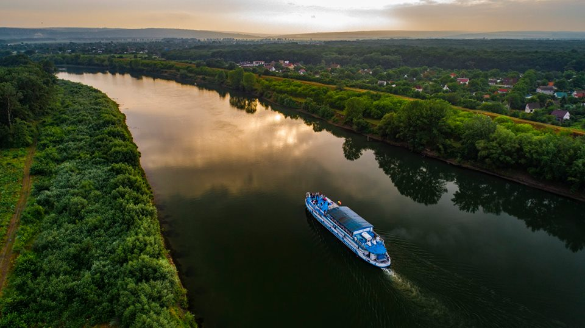
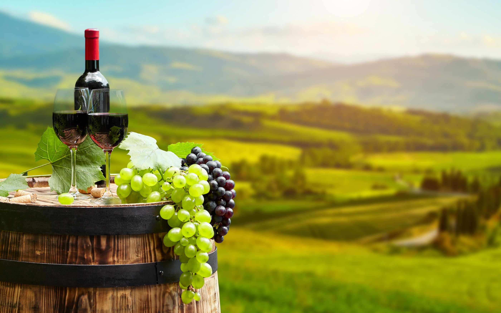
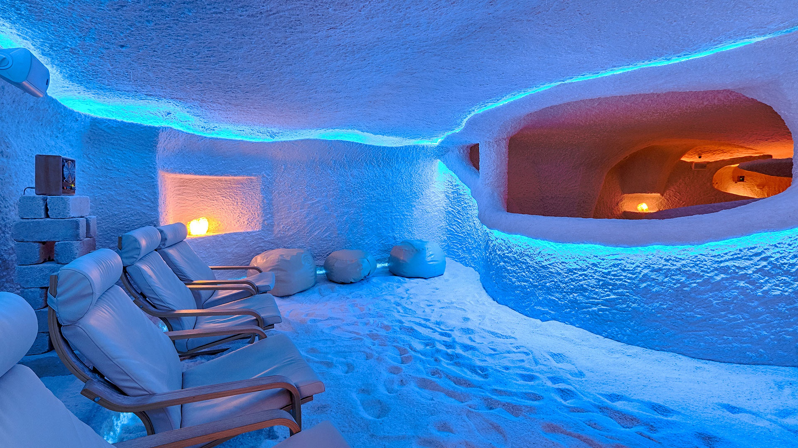

Malgré sa petite superficie, la République de Moldavie dispose d’un potentiel important en matière de développement touristique, représenté par les caractéristiques géomorphologiques de son territoire, notamment tous les monuments naturels, les réserves naturelles et les monuments géologiques d’importance européenne et mondiale. Les formes de tourisme prioritaires en Moldavie sont le tourisme rural, la viticulture et la vinification, le tourisme culturel et sanitaire.


Tourisme rural
Le tourisme rural est particulièrement populaire. L’environnement rural de la République de Moldova, ses communautés agricoles et ses villages pittoresques constituent une source importante pour:fourniture de services pour le placement traditionnel de visiteurs dans les zones rurales; offrir aux visiteurs la possibilité de participer à des activités et à des loisirs en milieu rural; familiarisation avec le folklore local, les animations et les traditions locales; des représentations de l'artisanat populaire avec la possibilité de participer au processus de réalisation de ces œuvres; offrir la possibilité d'acheter des articles fabriqués par des artisans.

Viticulture et oenotourisme
Les vignobles constituent également une destination touristique importante dans le secteur rural. Les vins produits en République de Moldova, en raison de leur qualité, sont en demande sur le plan international. 142 établissements vinicoles opèrent dans la république, dont 23 ont l'habitude de recevoir des visiteurs. Ici, les touristes ont la possibilité de se familiariser avec la technologie de production du vin, de suivre le processus de mise en bouteille du vin et, bien sûr, de déguster le produit final.
La République de Moldavie, en tant que pays viticole et viticole, offre à ses visiteurs un large choix de routes: caves à vin et cités souterraines, vinothèques, entreprises de première transformation du vin, de production de vins de champagne, de divin, de salsa, de baumes, etc. Les domaines viticoles font partie du tourisme route "Route du vin en République de Moldavie" et représentent une motivation importante pour visiter le pays. Ils constituent un moyen de promouvoir le meilleur produit touristique moldave.
Tourisme culturel
La République de Moldavie possède un riche patrimoine culturel qui peut être utilisé avec succès dans le tourisme. Les premiers monuments culturels préservés sont les vestiges des colonies Geto-Daces et des forteresses romaines. Les vestiges de forteresses médiévales, des complexes archéologiques tels que Orheyul Vek, des monastères de roche, des domaines de propriétaires terriens et des huttes de paysans représentent les spectacles les plus divers pour les touristes.
Au total, 140 sites du patrimoine culturel peuvent être inclus dans les itinéraires touristiques. Il existe à Chisinau de nombreux monuments du patrimoine culturel, des objets d’architecture locale des XIXe et XXe siècles qui peuvent être utilisés comme objets de tourisme. Il existe 87 musées en République de Moldova. La plupart des musées de la République de Moldova sont situés dans des bâtiments d'une importance architecturale particulière et possèdent une riche collection d'objets exposés. La diversité des cultures des différentes régions du pays fait partie intégrante du produit touristique national. La République de Moldavie est un mélange de nationalités et de cultures avec de nombreuses traditions, langues, folklore varié, cuisine, etc. Il existe environ 880 groupes de folklore dans la république. Nombre d'entre eux reflètent les traditions propres à la région et leurs traditions ethniques.
